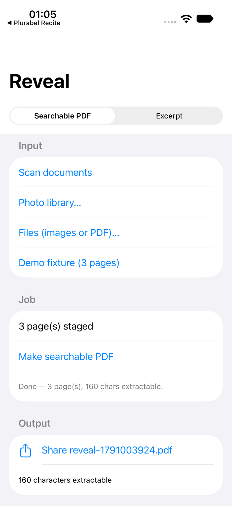
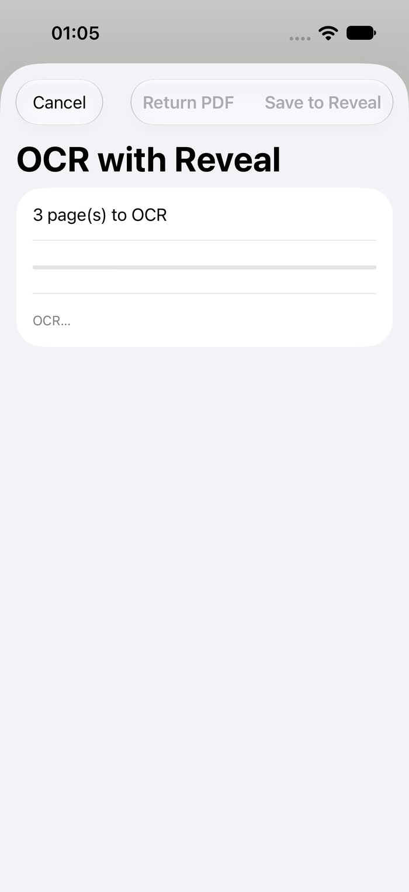

Plurabel
Reveal
A scan or photo becomes a searchable, selectable PDF. OCR runs on the phone — the pages never leave it.
What it does
- Photograph a document or pick scans from Photos or Files; a searchable PDF comes back with an invisible text layer.
- “OCR with Reveal” sits on the system share sheet — run it on a scan in Mail or Files without opening the app.
- On-device Vision OCR; no cloud service, no account.
- Excerpt mode: point it at a page and it writes the text as a markdown note.
- Originals are never replaced — output is a new file.
What it won’t do
- Upload your documents anywhere.
- Rewrite or compress the originals.
- Replace your scanner app — it takes the pages you have.
- Charge you again.


A page in, a searchable PDF out — and the same thing from the share sheet.
Coming to the App Store